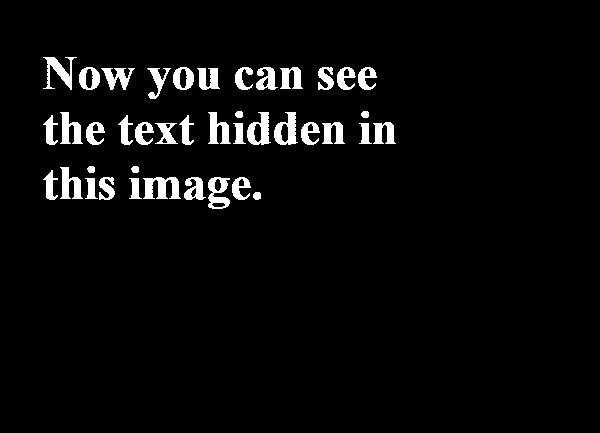

The thresold I have used is the number 92. I think one of the defining features of a cat is it's eyes. Their eyes are very fascinating as the pupil resembles an almond. I wanted to use a threshold that would keep most of the details in the eyes while making sure the rest of the cat's body can be seen in the photo. Most of the background has been removed from the new photo due to the threshold used. But this is fine, as I chose the focus of the photo to be on the cat.

The threshold that was used in this photo is the number 1. This is the only number in which text would show up.

I have chosen to use the threshold number 120 for this photo as this was for me one of the better numbers in which someone can read the text but doesn't contain as many extraneouss marks like small dots or smudges around the cursive writing. I don't think there is a single best number you can select for this photo. The aesthetic one may be going for differs between each person. Someone may chose to highlight the small details that make handwritten notes unique like the small smudges or ink spots or they could be like me and would prefer to solely focus on enhancing the visibility of the cursive writing.